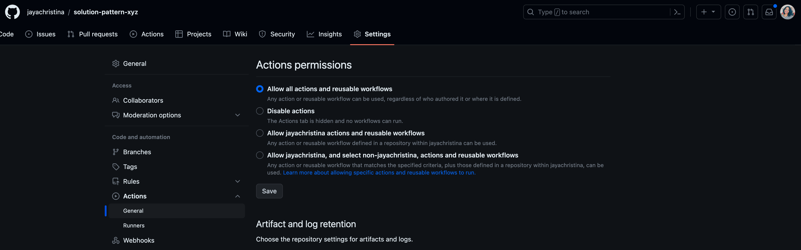
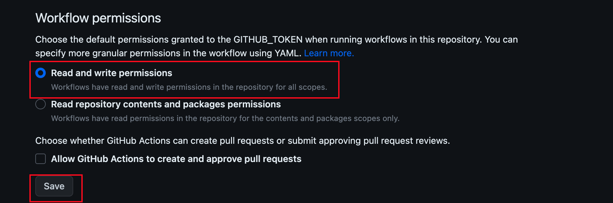
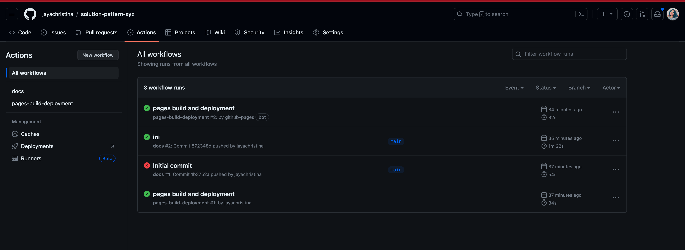
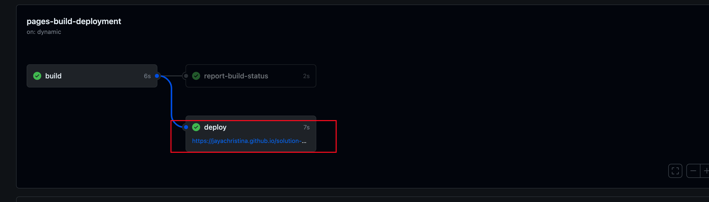

Solution Patterns: Contributors Guide
In-depth Guide
Learn how you can create a new site to document your solution pattern.
Check how to create the project, clone, build and run it:
Next, see all the details on how to get up and running with your documentation.
1. Create a new project
To create a new solution pattern site follow the steps below:
-
Access https://github.com/redhat-solution-patterns/solution-pattern-website-template;
-
Click on the
Use this templategreen button; -
Type the name of your solution pattern, e.g. "solution-pattern-xyz".
-
Check the Include all branches to ensure the github pages get deployed correctly.
-
Start the project in one of your organizations. Once you’re ready to publish your first version, you can move or fork the repository into the redhat-solution-patterns organization.
-
To avail of the githubpage to publish your documentation, keep the repository as public.
-
Click on "Create repository";
-
-
Click on the
Create repository from templatebutton. -
In a few seconds, you should have a new repository with the required files and configurations to get started with content development.
-
In the Settings tab of the new repo, from left-hand nav, go to "General > Code and automation > Actions > General"
-
Scroll to the bottom of the page to the section Workflow permissions. Choose Read and write permissions and click Save
-
2. Build and run
2.1 Prerequisites
You’ll need the following software:
-
Git (command: git)
-
Node.js (commands: node v12+ and npm)
-
Gulp (command: gulp)
| For information on how to install the prerequisites, refer to [_additional_installation_information] |
2.2 Setting up the new project
-
Using a terminal, clone and access the generated project:
git clone https://github.com/youruser/solution-pattern-xyz.git cd solution-pattern-xyz -
Use npm to install the project’s dependencies
npm install
2.3 Starting live preview mode
-
To build and preview the project locally you can run:
npx gulp
The browser should open automatically, and you can also see the endpoint listed in the output of the previous command execution: http://localhost:3000
2.4 The project’s structure
-
Website configuration:: There are three main configuration files to be aware of:
antora.yml,dev-site.ymlandsite.yml.-
solution-pattern-xyz/documentation/antora.yml: Where you can update the solution pattern’snameandtitle; -
solution-pattern-xyz/dev-site.yml: Where you can update thestart_pageto match thenameconfigured inantora.yml. -
solution-pattern-xyz/site.yml:Update thestart_pagelike you did on the previous step. Theurlwill eventually match the published page’s address.When using npx gulp, the preview site reflects thedev-site.ymlconfiguration.- Documentation to play with
-
There’s plenty of ways to customise the solution patternmaterial available including pages, titles and subtitles, navigation menu, and external references.
- Content Location
-
The content is mostly located under
solution-pattern-xyz/documentation. - Navigation
-
The navigation menu on the left has automatic counters to define the section number. Modify the navigation by changing the file:
solution-pattern-xyz/documentation/modules/ROOT/nav.adoc. - Pages
-
You have a coherent content structure at hand. It includes:
-
Core files: index, solution pattern introduction, architecture, demonstration and workshop; These are located under
solution-pattern-xyz/documentation/modules/ROOT/pages; -
Headings that follow those of other existing solution patterns very closely.
Feel free to remove and adjust what doesn’t serve you. However, it’s highly recommended to stick to the suggested level 1 headings (e.g., "= Title"). For subheadings (h2+), try to stick to what’s proposed for consistency, but go ahead and use different and more adequate subtitles when you need to.
-
-
3. Document
In this phase you’ll share all your knowledge while adopting adoc’s language and components in the pages amongst the project’s content structure.
3.1 Language and components
For a majority of the work, you are welcome to use several of what Asciidoc components have to offer. Get started with AsciiDoc Language Syntax quick reference.Adding to that, you can also use the features provided by Red Hat Developers for the Scholars template, such as clipboard, tabs and different formats for console input and output.
See syntax highlights in the Appendix: Documentation Syntax Highlights.
3.2 Content structure
The solution patterns are structured in four major sections (which are also part of the navigation menu):
-
Home page: An overview about the solution. Should give examples of use cases and scenarios it addresses an applies to. An overview of the story behind the solution implementation and of the implementation architecture itself.
-
Architecture: Covers common challenges such as antipatterns, not-optimal technical solutions and how it impacts a successful implementation from a technical perspective. Also includes an objective bullet list of the technologies used in this solution. Here is where you can include all the architecture diagrams and explanations.
-
See the solution in action: This is where users can see the working solution with content such as videos, text descriptions, screenshots and more. If available, it can also bring guides on how to install the demonstration implementation and its walkthrough.
-
Workshop: if available, brings details on how to install and deliver the workshop.
Refer to existing solution patterns for inspiration on ideas you can adopt on your own solution pattern documentation.
4.Publish
-
Make all the necessary changes to the cloned repo. Refer to these sections for more details on how to do this.
-
Get familiar with the project’s structure.
-
-
To deploy the repo as github pages, you will need to manage GitHub Actions settings for your new repository. Navigate to the Settings tab
-
From left hand nav, go to General > Code and automation > Actions > General
 -
Scroll to the bottom of the page to the section Workflow permissions.
-
Choose Read and write permissions and click Save
-
After your changes are made, commit and push your changes to git. This will auto-trigger a workflow which will deploy the pages as github pages.
-
To view this the deployed github-pages, navigate to Actions tab
 -
Click on the workflow which is named as pages build and deployment, and click on the link that is highlighted below within the deploy step.
 -
This link will open the deployed gitbub pages in a new tab. Each checkin you make will trigger a new github action, which will refresh this page
-
-